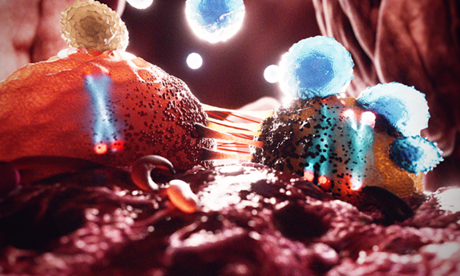

Y chromosome loss in cancer drives growth by evasion of adaptive immunity
Abdel-Hafiz, H.A., Schafer, J.M., Chen, X. et al. Nature 619, 624–631 (2023). Co-first author. https://doi.org/10.1038/s41586-023-06234-x
Baltimore, MD
Google Scholar
ORCID
I am a urologic surgeon and computational bioinformatician dedicated to decoding the genomics and immunology of urologic cancers—chiefly bladder and prostate malignancies. By fusing single‑cell and spatial omics with machine‑learning analytics, I investigate tumour heterogeneity and immune escape to enable truly precise therapeutics and first‑in‑class drugs.
My training began in China, where I earned an MD‑equivalent degree and an MSc in Oncology concentrated on urologic tumours. After three years as a Research Bioinformatician in the Department of Urology at Cedars‑Sinai Medical Center—leading NIH‑funded projects and mentoring junior scientists—I am now pursuing a PhD in Cell, Molecular & Developmental Biology at Johns Hopkins University.
I have authored more than 20 peer‑reviewed papers, including Nature articles as co‑first author (2023) and independent first author (2025). Our Y‑chromosome study was featured on Nature’s cover and highlighted by both the National Cancer Institute and the National Institutes of Health. I hold several U.S. patents, review manuscripts for 40+ SCI journals, serve on multiple early‑career editorial boards, and co‑lead the “Tumorigenesis” sessions for the Prostate Cancer Foundation.
My long‑term goal is to practise as a physician‑scientist who harnesses computation, single‑cell biology and AI to transform cancer detection, prognosis and therapy.
#Abdel-Hafiz, H.A., Schafer, J.M., Chen, X. et al. Nature 619, 624–631 (2023). Co-first author. https://doi.org/10.1038/s41586-023-06234-x
Chen, X., Shen, Y., Choi, S. et al. Nature 642, 1041–1050 (2025). https://doi.org/10.1038/s41586-025-09071-2
Oncogene, 2021. First author.
Oncogene, 2021. Co-first author.
Int J Mol Sci, 2023. Co-first author.
Full list available on Google Scholar